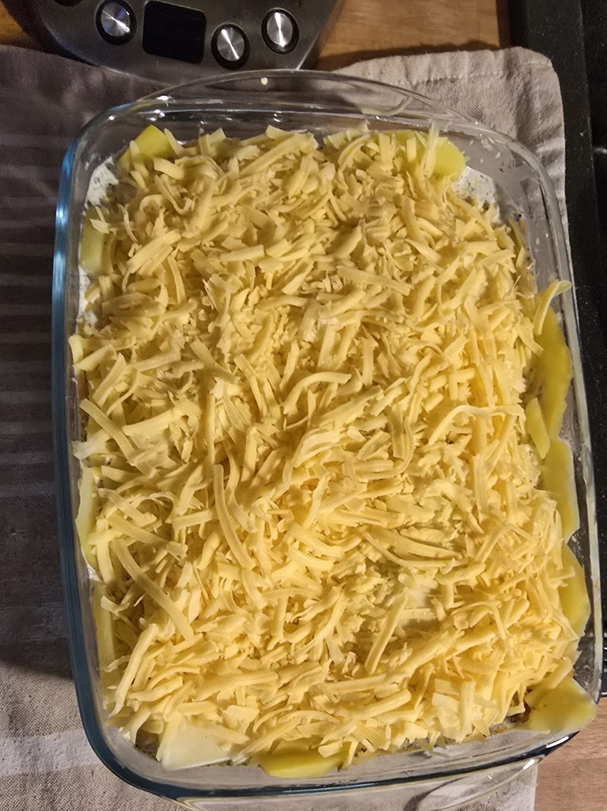
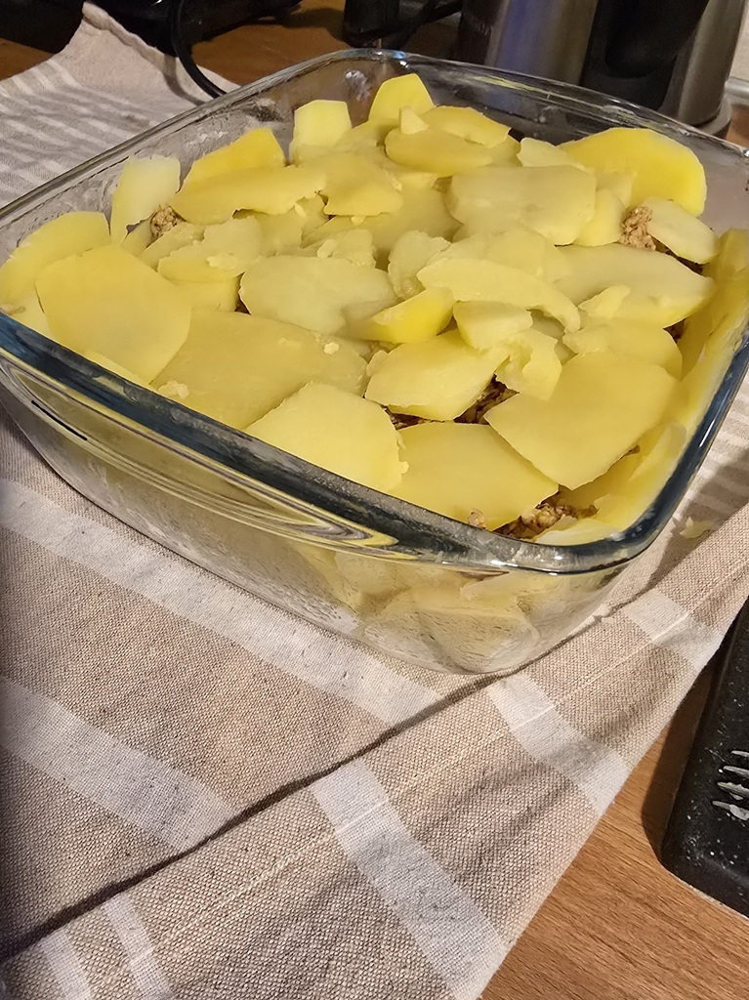
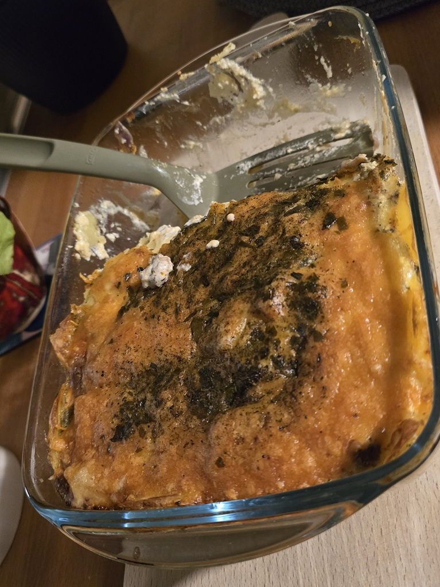

Skład:
- ziemniaki;
- cebula;
- ser;
- mięso mielone;
- śmietana;
- fiks kurczak ziołowo-śmietanowy;
- zioła (majeranek, lubczyk, czubryca, zioła prowensalskie);
- przyprawy (sól, pieprz, papryka wędzona);
- oliwa z oliwek;
Przygotowanie:
Ziemniaki obrać, pokroić w talarki i podgotować (osolone). Mięso mielone usmarzyć na patelni z ziołami i przyprawami. Przygotować naczynie do zapiekania - wysmarować oliwą i ułożyć na dnie oraz ścianach talarki ziemniaków. Na dolną warstwę ziemniaków dodać część mięsa mielonego i posypać serem. Przykryć kolejną warstwą ziemniaków i wykonać kolejne warstwy analogicznie. Na wierzch wysypać ser i na końcu polać śmiataną wymieszaną z fiksem. Wstawić do piekarnika rozgrzanego do conajmniej 180 stopni C. Wypiekać do momentu przypieczenia sera - z regóły 30 do 40 minut.
Zdjęcia:
  